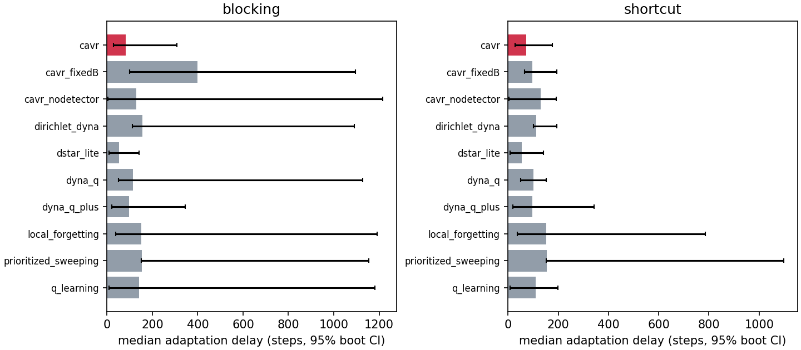

median adaptation delay vs strongest Dyna baseline (local_forgetting) at ρ=0.3 — paired bootstrap CI excludes zero
false alarms at ρ=0.3, inside the G1 budget of 5/1000
a credible steady-state success cost remains — reported, not hidden

Median adaptation delay with 95% bootstrap CI — blocking (left) and shortcut (right) scenarios; CAVR highlighted.